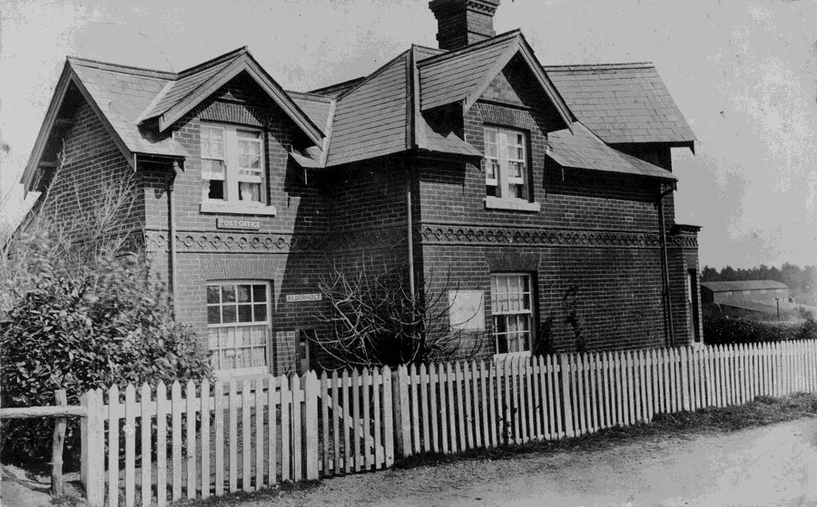
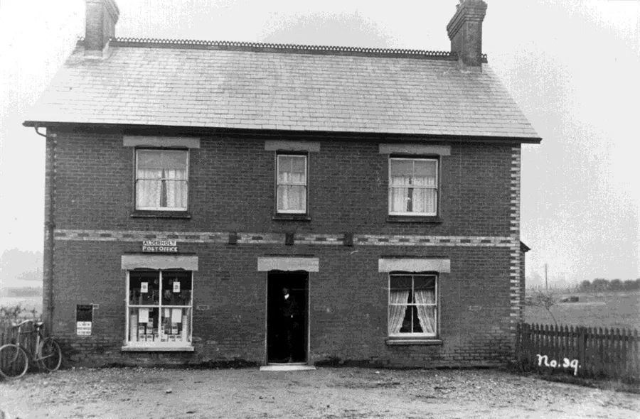
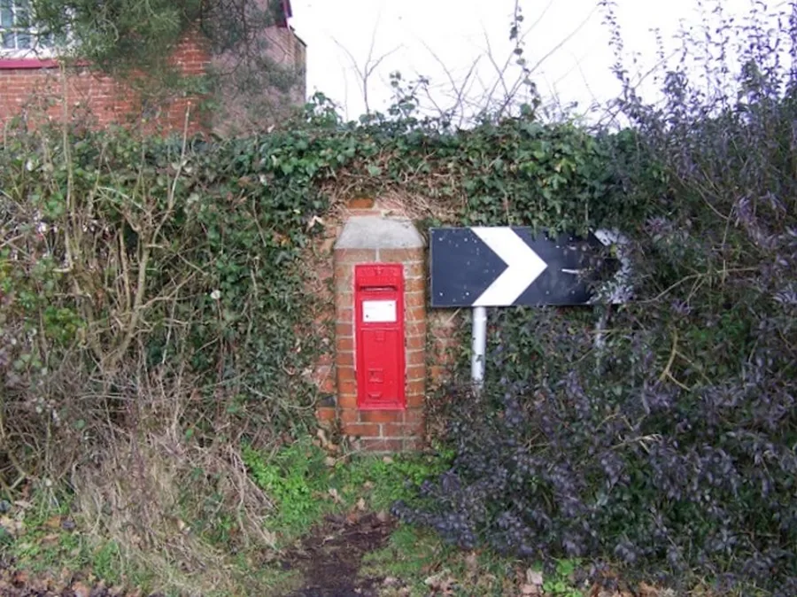
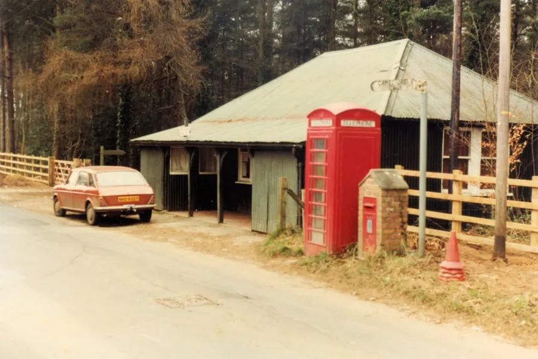
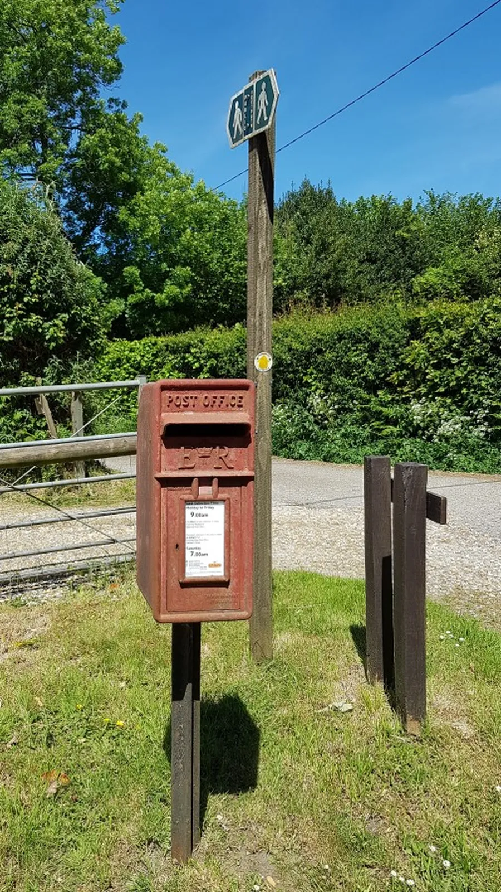
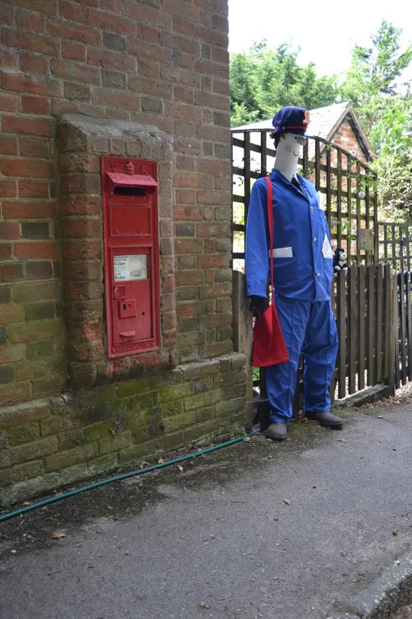
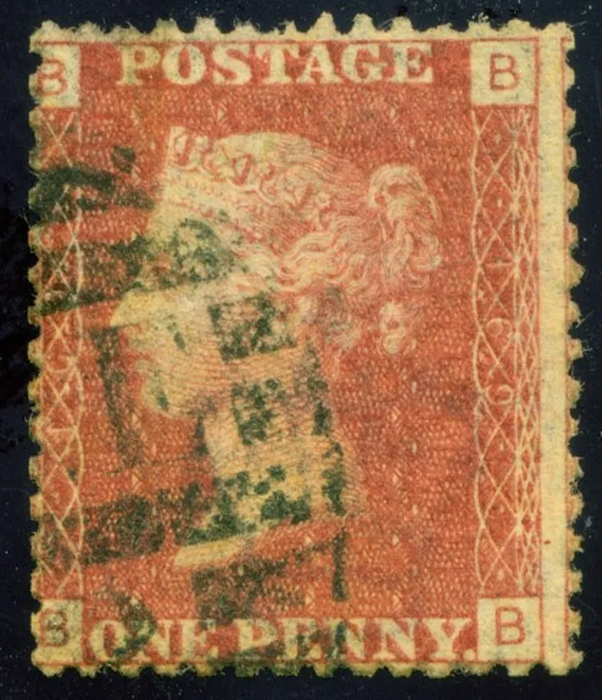
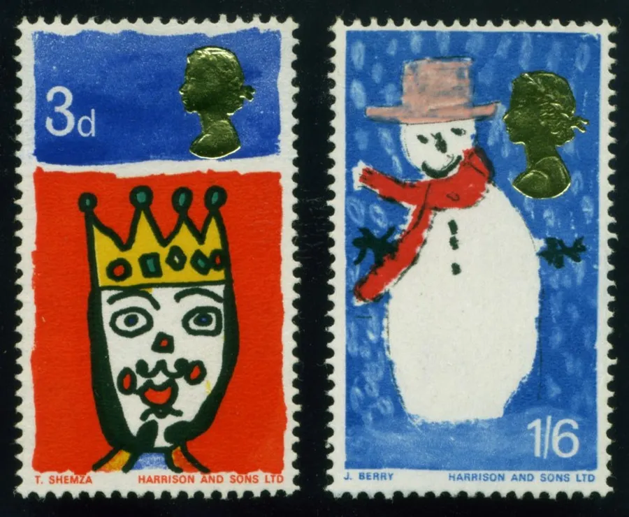

The Post Office
by Adrian King

Did you know that this Christmas around eight billion cards will be sent, and that on average each household will send 50 cards? Also about 500 million e-cards will be sent this holiday season. Many of these cards will be deposited at the Post Office counter and in the post boxes dotted around the village.

The Post Office was originally situated in the building which is now called South Lodge in Daggons Road. Major George Churchill replaced an old bungalow with the present house after 1889. Tom Brewer (1837-) was the Postmaster in 1885. He was also a woodman for Alderholt Park and his wife Blanche was the Postmistress.
The building had limited facilities, as telegrams had to be received and sent at the station. This was much improved when the Post Office moved to the location opposite the Churchill Arms in 1912.
Tom Brewer’s son, Arthur Wesley Brewer (1889-) was Postmaster until he left the village in 1917.
Jesse Titt became the Postmaster and also ran a cycle agency from the premises. His wife and son continued when he died.

Mr. and Mrs. George Beale took over the Post Office around 1952 and also ran a garage in a wooden building.
The Post Office closed in 1996 due to lack of support and greater financial competition. About this time the building became known as 'The Halt'. The Post Office counter is now in the Co-op shop.
The parish is unusual in that it lies in Dorset yet most postal addresses are listed as Fordingbridge, Hampshire, with SP6 (Salisbury Plain) postcodes. The area west of Batterley Drove is the exception using Cranborne or Wimborne as the postal town and BH (Bournemouth) postcodes.
| Early Postboxes (Kellys Directories) | ||
|---|---|---|
| Location | Type | Year |
| Alderholt | Wall Box | 1885 |
| Crendell | Wall Box | 1907 |
| Cripplestyle | Wall Box | 1885 |
| Current Postboxes | |||
|---|---|---|---|
| Location | Type | Royal Cypher Mark | Map Reference |
| Alderholt Mill | Wall Box | GR | SU1191514290 |
| Batterley Drove | Set on a post | ER | SU0892912357 |
| Co-op | Pillar Box | ER | SU1154412446 |
| Crendell Post Box Cottages | Wall Box | VR | SU0902012898 |
| Earlswood Drive | Set on a post | ER | SU1185512401 |
| Lower Daggons | Set on a post | ER | SU0975613440 |
| Presseys Corner | Wall Box | GR | SU1227513108 |
| Station Road | Set in a Brick Pillar | GVIR | SU1203412766 |
| St.James Church | Set on post | ER | SU1041512602 |
| Tudor Close | Set on post | ER | SU1241212453 |
Presseys Corner

The Presseys Corner box at Salisbury Arms Farm royal cypher was originally VR but a traffic accident on 27th May 2012 demolished the wall and post box. It was reported in the Bournemouth Echo on 13th July 2012 that Joyce Gould who lived at Salisbury Arms Farm said
“Heard a loud bang, looked out of the window, and saw several police cars outside the farm along the Fordingbridge Road. I saw a white van in my wall.
“A man ran across my yard and hid in one of the barns. Well of course the police found him.”
For a time the Royal Mail were reviewing post box access and it looked like the box would not be replaced. Eventually after much lobbying by the nearby residents the wall was rebuilt and the box was replaced with a GR box because the original was beyond repair.
Station Road

Stanley Broomfield says that the original brick pillar was demolished when the road through the village was widened and another pillar using similar bricks was built further back and the original box set in it.
St. James Church

On 30th Aug 2020 this post box was demolished. Simon Woodley wrote in the December Parish News.
“There used to be a post box at the end of the Vicarage drive just by the road. Some of you may remember it. In the summer when we returned from our holidays we were a bit surprised to find it gone. Two tyre tracks skidding off the road and making deep furrows in the earth showed what had happened. Along with the post box the footpath sign and the vicarage sign had also been knocked down, but unlike them the post box was nowhere to be seen. I checked to see if our neighbours had taken it in for safe keeping or reported the accident? Nope, they hadn’t done either. So I logged onto the Royal Mail website to tell them that Crown property had been stolen. There followed a sequence of emails.
“But the Post Office are wonderful and of course they came up trumps. I got a new post box at the end of October so finally the Tesco and Amazon deliveries can find me again. Can’t say things are moving as fast with the footpath sign — there’s only two people maintaining signs for the whole of Dorset. I’ve already had to tell many people who stand by the Memorial looking lost, that yes, there is a footpath up that track. Still its good work for a vicar to do, to signpost the way.”
In January 2021 it was noticed that the post box again was no longer there.
Simon Woodley said
“Yes, they put in a new shiny box and then within a few weeks it was gone again. I reported it but I’m not sure if its stolen or they removed it as they deemed it in an unsafe position.”

Postmasters and Mistresses
| Mr. Tom and Blanche Brewer | 1885–1907 |
| Mr. Arthur Wesley Brewer | –1917 |
| Mr. Jesse Titt | 1911–1927 |
| Mrs. Harriet Annie Titt | 1931–1939 |
| Mr. George Beale | 1952 |
| Dave and Victoria Bedward | |
| Mr. and Mrs R. C. Lloyd (Kip) | –1996 |

